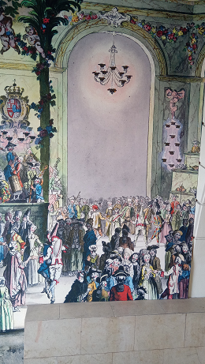
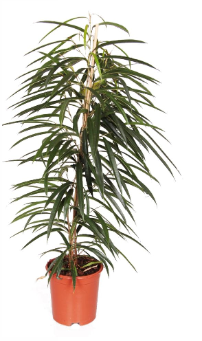

Les activités du CARRE
Avec Cécile, nous essayons d’égayer le hall du CARRE A LA FARINE, Cécile rencontre l’adjoint à la culture, Mme D.. C’est à ce moment que la FRESQUE  . du hall d’entrée est installée, puis nous installons 2 plantes vertes que je continue à entretenir régulièrement.
Gouter des séniors
Un jour Magalie, la représentante du pôle sénior du CCAS, me demande mon accord afin d’organiser un petit gouter dans le hall d’accueil du CARRE, pour des personnes âgées. J’en fait la demande à Cécile qui me donne l’autorisation pour cet évènement. A cette occasion, je rencontre les personnes avec qui j’ai eu contact au téléphone lors de mes interventions d’été au CCAS.
En juin 2018, Cécile nous réunit avec Francisco pour nous faire part de son départ du service culturel et rejoindre la petite enfance. Elle a toujours été à notre écoute et venait souvent rendre visite au CARRE lors des vernissages. Lorsque certains exposants semblent poser problème,Elle nous accompagne afin de nous soutenir dans notre tâche. Une petite anecdote retrace bien ce soutien.
L'oeuvre cassée
Au CARRE A LA FARINE, le démontage des expositions s’effectue le dimanche. Un jour, une exposante demande à reprendre son œuvre fragile le lundi. Cécile avait pressenti que l’artiste poserait problème.
Le lundi , à 8h30, Cécile arrive au CARRE afin de surveiller cette fin de démontage.
Lors du déménagement, l’exposante casse son œuvre
de verre en passant par la porte. Heureusement de Cécile était
présente ce matin, l’exposante m’aurait rendu responsable de cet
accident. Elle s’en est prise à Cécile en lui disant qu’elle
porterait plainte.
Il est vrai que ce n’est pas toujours facile avec certains artistes, je savais que je pouvais compter sur ma responsable.
L'exposante exubérante
Une autre anecdote concerne une exposante exubérante.
une brésilienne. Tout lui est dû. Les problèmes commencent avec le grand tableau exposé dans le HALL de CARRE qu’elle souhaite retirer. Malgré avoir essayé de lui expliquer
le règlement, Je dois faire appel au service culturel pour
demander une autorisation de retrait de cette œuvre.
Pour la
semaine d’exposition, elle ne veut pas de ma présence dans la
salle d’exposition. Je passe ainsi ma semaine dans le hall d’accueil.
Elle enfreint les règles de sécurité. Je dois faire appel aux
responsables de la sécurité afin de la raisonner, mais rien à
faire, une fois le service de sécurité parti, elle reprend ses marques.
Elle dit :‘’ je paye donc je fais ce fait ce que je veux’’.
Le dimanche soir, après le démontage, elle se permet de mettre un mot dans l’ascenseur au rouge à lèvre rouge contre moi. Ce soir là, je rentre à la maison déstabilisée. J’envoie donc un SMS à Cécile qui m’a vite réconfortée et qui a fait les démarches nécessaires auprés de la mairie. La mairie déposa une main courante.
Le lendemain, la police est venue constater les faits. Mais sous la colère, j’avais effacé ses graffitis ne laissant que des traces de ses revendications.
Cécile est souple mais vigilante avec les exposants. Elle me demande toujours mon avis lorsque leurs demandes sortent des conventions. Les exposants l’apprécient beaucoup. Avec Cécile, c’est un travail d’équipe.